Food Delivery Apps in Mexico: Where can it work?

A description of the problem and a discussion of the background

Assumptions:
Imagine that in México, they has not existed any delivery food service like UberEATS, Postmates or Rappi yet
You are part of a Company of food delivery service. In specific, you are in the strategical area
The company took the decision of enter to the Mexican market
So you need to know where is profitable the delivery service

